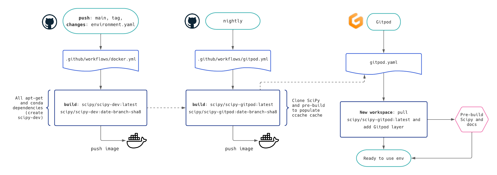

Continuous Integration#
Continuous integration (CI) is part of our development process and ensure that every piece of code or documentation which is contributed to SciPy is working and does not have unforeseen effects.
Note
Before submitting or updating your PR, please ensure that you tested your changes locally. See Checklist before submitting a PR and Running SciPy Tests Locally.
Workflows#
We run more than 20 different workflows with different versions of the dependencies, different architectures, etc. A PR must pass all these checks before it can be merged as to ensure a sustainable state of the project.
Apart from the unit tests, the documentation and examples in the docstrings are also checked. These are common failing workflows as Sphinx and doctests have very strict rules. These aspects are very important as documentation and examples are user facing elements. Ensures that these elements are properly rendered.
The logs can be long, but you will always find out why your build/test did not
pass a check. Simply click on Details to access the logs.
Following is a list of all the different workflows in use. They are grouped by CI resources providers.
GitHub Actions#
Windows Tests: test suite runs for Windows (x86_64)Linux Tests: test suite runs for Linux (x86_64)macOS Tests: test suite runs for macOS (x86_64)wheels: builds wheels for SciPy releases as well as nightly builds.Check the rendered docs here!: live preview of the documentation
The test suite runs on GitHub Actions and other platforms cover a range of
test/environment conditions: Python and NumPy versions
(lowest-supported to nightly builds), 32-bit vs. 64-bit, different compilers,
and more - for details, see the .yml configuration files.
Azure#
Lint: PEP8 and code styleWindows Python: test suite runs for WindowsLinux_Python_xx_32bit_full: 32-bit Linuxwheel_optimized_gcc: install the wheel, then run the test suite with python -OOsource_distribution: install viasdist, then run the test suiterefguide_asv_check: doctests from examples and benchmarksprerelease_deps_coverage_64bit_blas: use pre-released version of the dependencies and check coverage
CircleCI#
build_docs: build the documentationbuild_scipyrun_benchmarks: verify how the changes impact performance
CirrusCI#
Tests: test suite for specific architecture likemusllinux, arm, aarchWheels: build and upload some wheels
Codecov#
patch: the impact on code coverage due to your changesproject: the coverage of the whole project
Skipping#
Being an open-source project, we have access to a quota of CI resources. Ultimately, resources are limited and we should use them with care. This is why we ask you to verify your changes locally before pushing them.
Depending on the proposed change, you might want to skip part of the checks. It will be at the discretion of a maintainer to re-run some tests before integration.
Skipping CI can be achieved by adding a special text in the commit message:
[skip azp]: will skip Azure[skip actions]: will skip GitHub Actions[skip circle]: will skip CircleCI[skip cirrus]: will skip CirrusCI[skip ci]: will skip all CI
Of course, you can combine these to skip multiple workflows.
This skip information should be placed on a new line. In this example, we
just updated a .rst file in the documentation and ask to skip Azure and
GitHub Actions’ workflows:
DOC: improve QMCEngine examples.
[skip azp] [skip actions] [skip cirrus]
Wheel builds#
Wheels for SciPy releases and *nightly* builds are built using cibuildwheel in a Github Action. The Action runs:
when the commit message contains the text
[wheel build]on a scheduled basis once a week
when it is started manually.
when there is a push to the repository with a github reference starting with
refs/tags/v(and not ending withdev0)
The action does not run on forks of the main SciPy repository. The wheels that are created are available as artifacts associated with a successful run of the Action. When the Action runs on a schedule, or is manually started, the wheels are uploaded to the *scipy-wheels-nightly* repository.
It is not advised to use cibuildwheel to build scipy wheels on your own system as it will automatically install gfortran compilers and various other dependencies. Instead, one could use an isolated Docker container to build Linux wheels.
Docker image builds#
Two Docker images are built in CI with GitHub Actions, and made available on
Docker Hub under the scipy organisation:
scipy/scipy-dev- contains all the dependencies needed for developing SciPy. This image is only rebuilt whenenvironment.ymlin the root of the repo is updated,scipy/scipy-gitpod- builds on top ofscipy-devand contains a built development version of SciPy and the SciPy docs. It is the image pulled when a user opens Gitpod.
This diagram explains the CI setup, triggers, and flow of artifacts to Docker Hub and Gitpod:
Warning
These Docker images are intended for SciPy development only. These should not be used “as-is” for any production-level applications (they are not updated very frequently, and not audited for known security vulnerabilities for example).